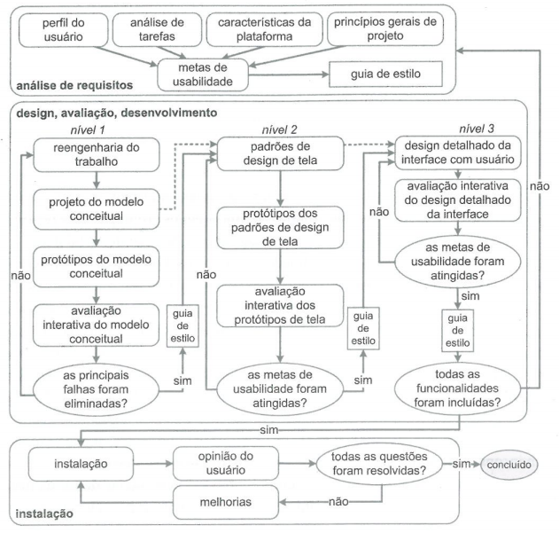

Visão do Produto
| Data | Versão | Descrição | Autor(es) |
|---|---|---|---|
| 26/08/2020 | 0.0 | Criação do cronograma | Equipe de GDD |
| 29/08/2020 | 0.1 | Criação do documento | Iolane e Stéfane |
| 29/08/2020 | 0.2 | Evolução do cronograma; Instrução do problema; descrição das partes interessadas. | Iolane e Stéfane |
| 29/08/2020 | 0.3 | Oportunidade de negócios | Iolane |
| 29/08/2020 | 0.4 | Ferramentas | Stéfane |
| 30/08/2020 | 0.5 | Propósito, escopo, tema do jogo, visão geral | Gabriela |
| 02/09/2020 | 0.6 | Riscos | Julio |
| 06/09/2020 | 0.7 | Ciclo de Vida, alterações nas Ferramentas do Projeto e Revisão do documento | Stéfane |
| 16/09/2020 | 0.8 | Tranferencia do cronograma para uma nova página | Iolane |
| 05/10/2020 | 0.9 | Adição de novas ferramentas | Iolane |
| 01/12/2020 | 1.0 | Atualização e revisão do documento | Stéfane Souza |
Introdução
Propósito
Esse projeto visa apoiar o aprendizado sobre a interação humana com a tecnologia no âmbito das prototipações.
Escopo
O projeto limita-se às prototipações de baixo e alto nível.
Tema do Jogo
O jogo será educacional voltado ao aprendizado de prototipação.
Definições, acrônimos e abreviações
- GDD - Game Design Document
- IHC - Interação Humano Computador
Visão Geral
Seguindo o ciclo de engenharia de usabilidade da Mayhew. O projeto será desenvolvido segundo o cronograma presente nesse documento no tópico 5. As características do jogo, como história, personagens, jogabilidade e interface serão pensadas a partir do problema identificado no tópico 2.2 e dos dados que serão coletados a partir do público alvo.
Ciclo de Vida
Figura 1 - Ciclo da Engenharia de Usabilidade
{kind=link}

Fonte: Mayhew (1999)
O Ciclo da Engenharia de Usabilidade é dividido em três fases: Análise de Requisitos; Design, avaliação e desenvolvimento, e Instalação.
Análise de Requisitos: Nesta fase, são definidas as metas de usabilidade com base no perfil dos usuários, análise de tarefas, possibilidades e limitações da plataforma, e princípios gerais de design em IHC. Todas essas informações são registradas no artefato Guia de Estilo. Nessa fase o grupo pretende criar um questionário e recolher dados sobre o que os usuários esperam de um jogo educacional, os interesses do público, etc.
Design, avaliação e desenvolvimento: O objetivo desta fase é conceber uma solução que atenda às metas de usabilidade definidas na fase anterior. Isso é feito em 3 níveis.
a) Nível 1: Neste nível, é preciso realizar uma reengenharia do trabalho, repensando a execução das tarefas para alcançar os objetivos dos usuários. É preciso elaborar alternativas de solução do modelo conceitual, elaborar protótipos de baixa fidelidade e analisá-los.
b) Nível 2: Neste nível, é preciso estabelecer padrões de design para a solução que está sendo concebida, construir protótipos de média fidelidade e avaliá-los de acordo com esses padrões.
c) Nível 3: Neste nível, é realizado o projeto detalhado da interface, com alta fidelidade, para ser implementado. Instalação: Nesta fase, o designer deve coletar opiniões e dados dos usuários a respeito da utilização da ferramenta depois de algum tempo de uso. Como o foco do trabalho dentro da disciplina é apenas o planejamento, funcionamento e história completa do jogo, não iremos abordar as partes de desenvolvimento de instalação do ciclo de vida Mayhew, visto que para a disciplina não é necessário a parte de codificação.
Instalação: Nesta fase, o designer deve coletar opiniões e dados dos usuários a respeito da utilização da ferramenta depois de algum tempo de uso.
Como o foco do trabalho dentro da disciplina é apenas o planejamento, funcionamento e história completa do jogo, não iremos abordar a parte de Instalação do ciclo de vida Mayhew, visto que para a disciplina não é necessário a parte de codificação.
Posição
Oportunidade de Negócios
Os jogos educacionais vem se tornando cada vez mais populares. Segundo SAVI e ULBRICHT, 2008, as salas de aula tradicionais estão se tornando monótonas em relação às diversas mídias e o dinamismo da internet que os alunos estão acostumados. Unir as práticas educacionais aos recursos multimídia em jogos educacionais, se bem projetados, podem ser uma experiência lúdica e enriquecedora.
Existem diversos jogos educacionais no mercado que ensinam a respeito de diversos temas, entretanto há uma escassez de jogos que auxiliem na aprendizagem teórica de Interação Humano Computador, em específico o tema Prototipação.
Nosso projeto visa solucionar o problema da falta de jogos educacionais que ensinem a respeito da teoria de prototipação.
Instrução do Problema
Tabela 1 - Instrução do Problema
| O problema da | falta de uma forma interativa de estudos do tema de Prototipação da disciplina de Interação Humano Computador (IHC) |
| Afeta | os estudantes da disciplina |
| Cujo impacto é | a dificuldade de fixar o conteúdo ministrado em sala |
| Uma boa solução seria | um jogo interativo de perguntas e respostas. |
Fonte: Autor (2020)
Descrições das Partes Interessadas e Usuários
Equipe
Tabela 2 - Equipe
| Nome | Matrícula | Responsabilidade | GitHub |
|---|---|---|---|
| Gabriela | 15/0127006 | Planejar e executar o Projeto de Interface do software | @gag2502 |
| Guilherme | 15/0128312 | Planejar e executar o Projeto de Interface do software | @gleal17 |
| Iolane Andrade | 13/0028355 | Planejar e executar o Projeto de Interface do software | @IolaneAndrade |
| Stéfane Souza | 15/0148623 | Planejar e executar o Projeto de Interface do software | @stefanesouza |
Fonte: Autor (2020)
Equipe de Avaliação e Suporte
Tabela 3 - Equipe de Avaliação e Suporte
| Nome | Descrição | Responsabilidade |
|---|---|---|
| André Barros | Professor da disciplina | Orientar a equipe durante o desenvolvimento do projeto |
Fonte: Autor (2020)
Perfil do Usuário
Tabela 4 - Perfil 1: Estudante
| Estudante | . |
|---|---|
| Representantes | Estudantes |
| Descrição | Estudantes que tem interesse em um auxilio para aprender prototipação |
| Responsabilidade | Estudar para responder questões, manter as vidas no jogo e a saúde do personagem |
| Critérios de Sucesso | Responder questões diáriamente para ganhar icones para manter a saúde do personagem, manter as vidas e avançar de fases para concluir o estudo |
| Envolvimento | Alto |
Fonte: Autor (2020)
Tabela 5 - Perfil 2: Professor
| Professor | . |
|---|---|
| Representantes | Professores |
| Descrição | Professores que lecionam sobre prototipação |
| Responsabilidade | Criar uma turma, selecionar questões do banco de questões e monitorar o ranking da turma |
| Critérios de Sucesso | Monitorar o progresso dos estudantes |
| Envolvimento | Baixo |
Fonte: Autor (2020)
Ferramentas do Projeto
Tabela 6 - Ferramentas do Projeto
| Ferramenta | Descrição |
|---|---|
| Microsoft Teams | Ferramenta de comunicação do grupo para acompanhamento de aulas e reuniões |
| GitHub | Plataforma utilizada para manter a documentação do projeto e o seu versionamento |
| GitPages | Ferramenta utilizada para publicar os documentos do projeto de forma mais organizada |
| Telegram | Ferramenta de comunicação rápida entre os membros do grupo para marcar reuniões, etc |
| Google Drive | Plataforma utilizada para armazenar documentos necessários para o projeto onde todos possam ter acesso rápido |
| Storyboard That | Ferramenta utilizada para a elaboração dos storyboads do projeto |
| Google Forms | Ferramenta utilizada na elaboração e aplicação de questionários |
| Draw.io | Ferramenta utilizada na elaboração de esquemáticos |
Fonte: Autor (2020)
Referências
SAVI, Rafael; ULBRICHT, Vania Ribas. Jogos digitais educacionais: benefícios e desafios. RENOTE-Revista Novas Tecnologias na Educação, v. 6, n. 1, 2008. Disponível em: https://www.seer.ufrgs.br/renote/article/viewFile/14405/8310